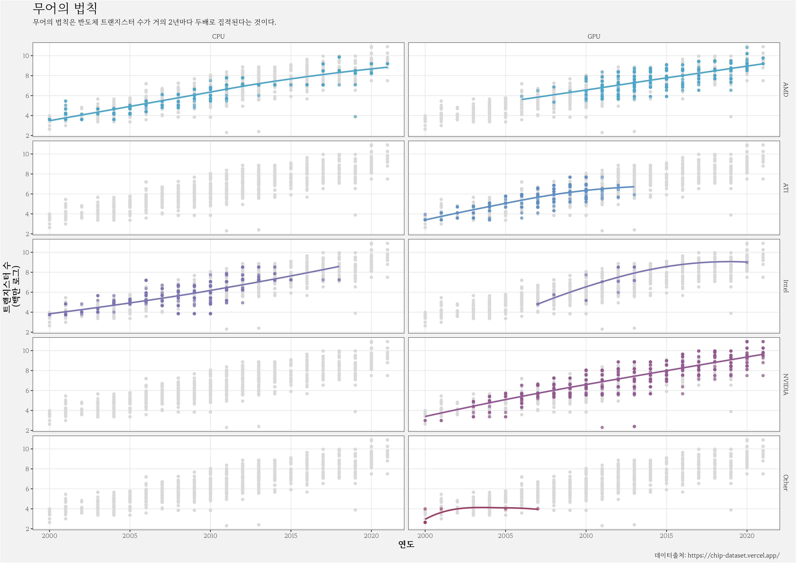

chips.Rmd
extrafont::loadfonts()
chips_g <- chips %>%
ggplot(aes(출시연도, log(트랜지스터수), colour=공급사))+
geom_point(data= ~ subset(., select=-c(공급사, 유형)), colour="grey85")+
geom_point(alpha=0.6) +
geom_smooth(se=FALSE, span=1.5) +
facet_grid(공급사~유형) +
labs( x = "연도",
y = "트랜지스터 수 \n(백만 로그)",
title = "무어의 법칙",
subtitle = "무어의 법칙은 반도체 트랜지스터 수가 거의 2년마다 두배로 집적된다는 것이다.",
caption="데이터출처: https://chip-dataset.vercel.app/") +
scale_colour_manual(values=c("#4ba6c9", "#5b8fc6", "#7b75b4", "#935891", "#9b3e63"))+
theme_bw( base_family = "MaruBuri")+
theme(panel.grid.minor = element_blank(),
legend.position = "none",
axis.title = element_text(face="bold", size=12),
strip.text = element_text(size=9),
strip.background = element_blank(),
plot.background = element_rect(fill="grey95"),
plot.title = element_text(size=18),
plot.subtitle = element_text(size=10))
ggsave( glue::glue("{here::here()}/man/figures/chips_g.png") ,
chips_g,
device = ragg::agg_png,
width = 297, height = 210, units = "mm", res = 600, scaling = 0.75)
knitr::include_graphics(glue::glue("{here::here()}/man/figures/chips_g.png"))